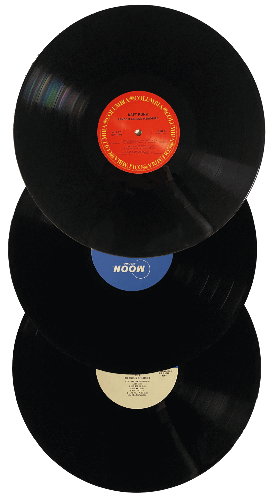
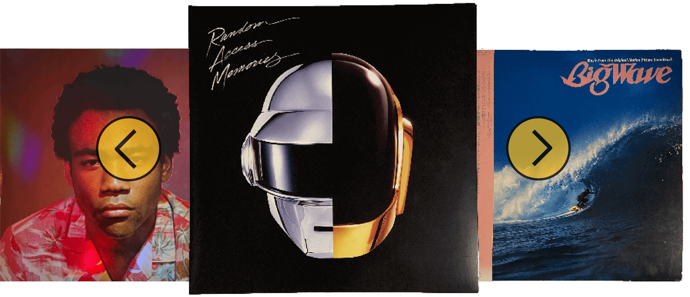

Waarom
Vinyl luisteren heefte en aantal voordelen:
Vinyl heeft warmer geluid.
Daarnaast voelt een plaat uit de kast halen en deze afspelen een stuk specialer dan een app openen.
Verzamelen
Een van de andere redenen waarom het leuk is om vinyl te leusten is het sparen van platen. Een fysiek product hebben van je favoriete muziek is super leuk! Ook zie je op de hoezen de cover art mooi weergegeven en zijn er vaak extra afbeeldingen of songteksten te vinden.